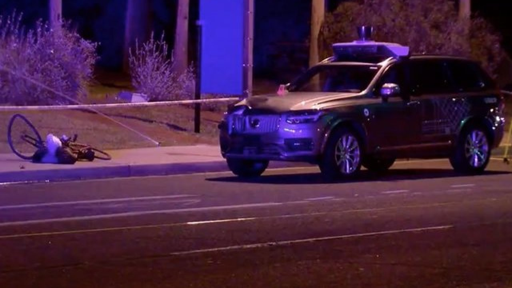

Self-Driving Uber car (7) (78)
On 18 March 2018, for the first time a self-driving car killed a pediastran called Elaine Herzberg.
[...] Herzberg was pushing a bicycle across a four-lane road in Tempe, Arizona, United States, when she was struck by an Uber test vehicle, which was operating in self-drive mode with a human safety backup driver sitting in the driving seat. Following the collision, Herzberg was taken to the hospital where she died of her injuries [...]
This incident was probably caused by a problem in the car software: this one is used by vehicles to decide if they have to avoid an object (obstacle) or not. In this case, the software saw the bike and the woman on the road, but it thought that it was not necessary to react immediately, presumably because it didn't recognise that she was a person, in fact in the video the car didn't slow down.
Uber decided to inspect all the self-driving cars trying to improve the functionality of the software, but temporarily the governor of Arizona forbids the Uber tests. This company is not criminally liable for this event, because there are no basis for a charge and also because there is the general idea that if the car was driven by a human that it would impossible to not kill the woman.
This incident is the proof that driverless cars are not still ready and there it takes more time to improve this softwares.